Crie o seu duelistaCreate your duelistCrea tu duelistaTạo đấu sĩ của bạn
Tudo começa com você: escolha o idioma, o nome com que os NPCs vão te chamar e o rosto que vai aparecer no seu perfil, no PVP e no ranking.It all starts with you: pick the language, the name the NPCs will call you and the face shown on your profile, in PVP and on the leaderboard.Todo empieza contigo: elige el idioma, el nombre con el que te llamarán los NPC y el rostro que aparecerá en tu perfil, en el PVP y en el ranking.Mọi thứ bắt đầu từ bạn: chọn ngôn ngữ, cái tên mà NPC sẽ gọi bạn và gương mặt hiển thị trên hồ sơ, trong PVP và bảng xếp hạng.
- Português, English, Español e Tiếng Việt, trocáveis a qualquer horaPortuguese, English, Spanish and Vietnamese, switchable any timePortugués, inglés, español y vietnamita, cambiables en cualquier momentoTiếng Bồ Đào Nha, Anh, Tây Ban Nha và Việt, đổi bất cứ lúc nào
- Avatares de personagens clássicos e novos, e molduras para o perfilAvatars of classic and new characters, plus profile framesAvatares de personajes clásicos y nuevos, y marcos de perfilẢnh đại diện nhân vật cổ điển và mới, cùng khung hồ sơ
- Vários saves no mesmo aparelho (e cross-save entre PC e celular na Founder)Multiple saves on one device (and PC-phone cross-save with Founder)Varias partidas en el mismo dispositivo (y cross-save entre PC y móvil con Founder)Nhiều bản lưu trên một thiết bị (và đồng bộ PC-điện thoại với Founder)
Escolha o seu caminhoChoose your pathElige tu caminoChọn con đường của bạn
Antes do primeiro duelo você escolhe o deck que vai te acompanhar: três decks prontos, cada um com o seu campo e a sua fusão-assinatura, ou a Destiny Case, para quem prefere deixar a sorte decidir.Before your first duel you pick the deck that will travel with you: three ready-made decks, each with its own field and signature fusion, or the Destiny Case, for those who let luck decide.Antes del primer duelo eliges el mazo que te acompañará: tres mazos listos, cada uno con su campo y su fusión insignia, o la Destiny Case, para quien prefiere dejarlo a la suerte.Trước trận đầu tiên, bạn chọn bộ bài đồng hành: ba bộ bài dựng sẵn, mỗi bộ có sân và hợp thể đặc trưng riêng, hoặc Destiny Case cho ai muốn phó mặc cho may mắn.
O Príncipe e os GuardiõesThe Prince and the GuardiansEl Príncipe y los GuardianesHoàng tử và các Người giữ
A campanha começa no palácio do Faraó. Cada duelista tem deck, IA e falas próprias, e a história avança com cenas, músicas e cenários feitos para o jogo.The campaign starts in the Pharaoh's palace. Every duelist has their own deck, AI and lines, and the story moves through scenes, music and backdrops made for the game.La campaña empieza en el palacio del Faraón. Cada duelista tiene mazo, IA y diálogos propios, y la historia avanza con escenas, música y escenarios hechos para el juego.Chiến dịch bắt đầu trong cung điện Pharaoh. Mỗi đấu sĩ có bộ bài, AI và lời thoại riêng, và câu chuyện tiến triển qua các cảnh, nhạc và bối cảnh làm riêng cho game.
- 1O PalácioThe PalaceEl PalacioCung điệnSimon Muran, Teana, Jono e o duelo contra Seto.Simon Muran, Teana, Jono and the duel against Seto.Simon Muran, Teana, Jono y el duelo contra Seto.Simon Muran, Teana, Jono và trận đấu với Seto.
- 2A RedençãoThe RedemptionLa RedenciónSự cứu chuộcOs sacerdotes, os Magos dos elementos e os Altos Magos.The priests, the elemental Mages and the High Mages.Los sacerdotes, los Magos elementales y los Altos Magos.Các tư tế, Pháp sư nguyên tố và Đại pháp sư.
- 3O RetornoThe ReturnEl RegresoSự trở lạiHeishin e o confronto final com Zorc Necrophades.Heishin and the final clash with Zorc Necrophades.Heishin y el enfrentamiento final con Zorc Necrophades.Heishin và trận chiến cuối với Zorc Necrophades.
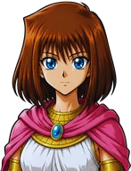
Teana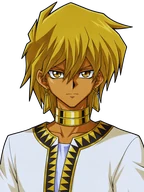
Jono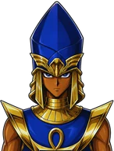
Seto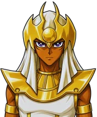
Mahad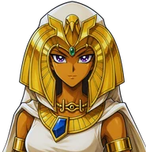
Isis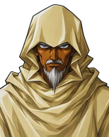
Akhenaden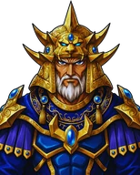
Secmeton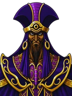
Heishin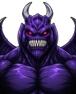
ZorcFusões como você lembravaFusions the way you rememberFusiones como las recordabasHợp thể như bạn còn nhớ
A base é a do Forbidden Memories: duelo rápido, fusão por tentativa e erro, atributos e campos. Por cima disso entram efeitos de cartas modernas, animações novas e uma arena redesenhada.The core is Forbidden Memories: fast duels, trial-and-error fusions, attributes and fields. On top of that come modern card effects, new animations and a redesigned arena.La base es Forbidden Memories: duelo rápido, fusión por prueba y error, atributos y campos. Encima llegan efectos de cartas modernas, animaciones nuevas y una arena rediseñada.Nền tảng là Forbidden Memories: đấu nhanh, hợp thể thử-và-sai, thuộc tính và sân. Bên trên là hiệu ứng thẻ hiện đại, hoạt ảnh mới và đấu trường được thiết kế lại.
- Mais de 1.700 cartas, com Full Arts para as rarasOver 1,700 cards, with Full Arts for the rare onesMás de 1.700 cartas, con Full Arts para las rarasHơn 1.700 thẻ, có Full Art cho thẻ hiếm
- Fusões por nome e genéricas, por tipo, atributo e faixa de ATKNamed and generic fusions, by type, attribute and ATK rangeFusiones por nombre y genéricas, por tipo, atributo y rango de ATKHợp thể theo tên và tổng quát, theo loại, thuộc tính và mức ATK
- Vantagem elemental (+500) e campos mágicosElemental advantage (+500) and magic fieldsVentaja elemental (+500) y campos mágicosLợi thế nguyên tố (+500) và sân phép
- Nota de 0 a 100 no fim do duelo: o Rank decide o dropA 0 to 100 score after each duel: your Rank decides the dropNota de 0 a 100 al final del duelo: el Rank decide el botínĐiểm 0 đến 100 sau mỗi trận: Rank quyết định phần thưởng
Rumo ao castelo do PegasusToward Pegasus's castleRumbo al castillo de PegasusHướng tới lâu đài của Pegasus
Um convite leva você até a ilha. São nove capítulos, de Solomon até o Pegasus, passando pelo labirinto, pelos portadores dos Itens do Milênio e pelo Dragão Branco do Kaiba, com uma arena e campos novos só desta temporada.An invitation takes you to the island. Nine chapters, from Solomon to Pegasus, through the labyrinth, the Millennium Item holders and Kaiba's White Dragon, with an arena and fields made just for this season.Una invitación te lleva a la isla. Nueve capítulos, de Solomon a Pegasus, pasando por el laberinto, los portadores de los Objetos del Milenio y el Dragón Blanco de Kaiba, con una arena y campos nuevos solo de esta temporada.Một lời mời đưa bạn tới hòn đảo. Chín chương, từ Solomon đến Pegasus, qua mê cung, những người giữ Bảo vật Thiên niên kỷ và Rồng Trắng của Kaiba, với đấu trường và sân mới chỉ có ở mùa này.
- 1O ConviteThe InvitationLa InvitaciónLời mời
- 2A IlhaThe IslandLa IslaHòn đảo
- 3Sombras no CaminhoShadows on the PathSombras en el CaminoBóng tối trên đường
- 4O LabirintoThe LabyrinthEl LaberintoMê cung
- 5O Guardião do MilênioThe Millennium GuardianEl Guardián del MilenioNgười giữ Thiên niên kỷ
- 6O Anel do MilênioThe Millennium RingEl Anillo del MilenioNhẫn Thiên niên kỷ
- 7A Guardiã do ColarThe Guardian of the NecklaceLa Guardiana del CollarNgười giữ Vòng cổ
- 8O Dragão BrancoThe White DragonEl Dragón BlancoRồng Trắng
- 9O Olho do MilênioThe Millennium EyeEl Ojo del MilenioCon mắt Thiên niên kỷ
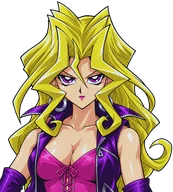
Mai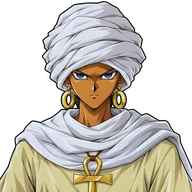
Shadi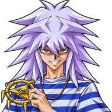
Yami Bakura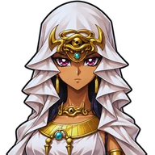
IshizuO Olho do MilênioThe Millennium EyeEl Ojo del MilenioCon mắt Thiên niên kỷ
Vencer o Pegasus fecha a Season 2 com um epílogo de volta à loja do Solomon, os créditos e uma prévia do que vem na Season 3. Quem venceu cada chefe leva todos eles para o Free Duel e para o Championship.Beating Pegasus closes Season 2 with an epilogue back at Solomon's shop, the credits and a preview of what comes in Season 3. Every boss you beat follows you into Free Duel and the Championship.Vencer a Pegasus cierra la Temporada 2 con un epílogo de vuelta en la tienda de Solomon, los créditos y un adelanto de lo que llega en la Temporada 3. Cada jefe vencido te acompaña al Free Duel y al Championship.Đánh bại Pegasus khép lại Mùa 2 với phần kết tại cửa hàng của Solomon, phần credit và đoạn xem trước Mùa 3. Mỗi trùm bạn đã hạ sẽ theo bạn vào Free Duel và Championship.
- Epílogo e créditos da Season 2Season 2 epilogue and creditsEpílogo y créditos de la Temporada 2Phần kết và credit Mùa 2
- Prévia da Season 3Season 3 previewAdelanto de la Temporada 3Xem trước Mùa 3
- Chefes vencidos entram no Free DuelDefeated bosses join Free DuelLos jefes vencidos entran al Free DuelTrùm đã hạ xuất hiện trong Free Duel
Boosters, loja e roletaBoosters, shop and wheelSobres, tienda y ruletaBooster, cửa hàng và vòng quay
As Stars que você ganha nos duelos viram cartas: boosters temáticos com abertura animada, vitrine de cartas avulsas, eventos com boosters especiais e a Roleta, com tickets e prêmios próprios.The Stars you earn in duels turn into cards: themed boosters with animated openings, a single-card showcase, events with special boosters and the Wheel, with its own tickets and prizes.Las Stars que ganas en los duelos se vuelven cartas: sobres temáticos con apertura animada, vitrina de cartas sueltas, eventos con sobres especiales y la Ruleta, con tickets y premios propios.Stars kiếm được trong trận sẽ thành thẻ: booster theo chủ đề với hoạt ảnh mở gói, quầy thẻ lẻ, sự kiện với booster đặc biệt và Vòng quay với vé và phần thưởng riêng.
- Mais de 20 boosters temáticos, por tipo e por arquétipoOver 20 themed boosters, by type and archetypeMás de 20 sobres temáticos, por tipo y arquetipoHơn 20 booster theo loại và archetype
- Raridades N, R, SR e UR, e Full Art para as repetidasN, R, SR and UR rarities, and Full Art for duplicatesRarezas N, R, SR y UR, y Full Art para las repetidasĐộ hiếm N, R, SR, UR, và Full Art cho thẻ trùng
- Editor de deck com filtros, banlist e vários decks salvosDeck editor with filters, banlist and several saved decksEditor de mazo con filtros, banlist y varios mazos guardadosTrình chỉnh bộ bài có bộ lọc, banlist và nhiều bộ bài lưu
Forbidden Legacy ChampionshipForbidden Legacy ChampionshipForbidden Legacy ChampionshipForbidden Legacy Championship
Terminou a Season 1? Hora do desafio definitivo: 10 duelos seguidos, uma restrição sorteada por rodada só para você, checkpoints nas lutas 3 e 6 e um Boss no fim. O Championship Lendário é a única chance de levar um Deus Egípcio.Finished Season 1? Time for the ultimate challenge: 10 duels in a row, a random restriction each round that only applies to you, checkpoints at fights 3 and 6 and a Boss at the end. The Legendary Championship is the only shot at an Egyptian God.¿Terminaste la Temporada 1? Hora del desafío definitivo: 10 duelos seguidos, una restricción sorteada por ronda solo para ti, puntos de control en las luchas 3 y 6 y un Jefe al final. El Championship Legendario es la única oportunidad de llevarte un Dios Egipcio.Xong Mùa 1? Đến lúc thử thách tối thượng: 10 trận liên tiếp, mỗi vòng một hạn chế ngẫu nhiên chỉ áp lên bạn, điểm lưu ở trận 3 và 6, và một Boss ở cuối. Championship Huyền thoại là cơ hội duy nhất để có Thần Ai Cập.
- Modo Hardcore, sem checkpoints e com mais chance de LendárioHardcore mode, no checkpoints and a higher Legendary chanceModo Hardcore, sin puntos de control y con más probabilidad de LegendarioChế độ Hardcore, không điểm lưu và tỉ lệ Huyền thoại cao hơn
- Torneio Sombrio, com duelistas e cartas exclusivosShadow Tournament, with exclusive duelists and cardsTorneo Sombrío, con duelistas y cartas exclusivosGiải đấu Bóng tối, với đấu sĩ và thẻ độc quyền
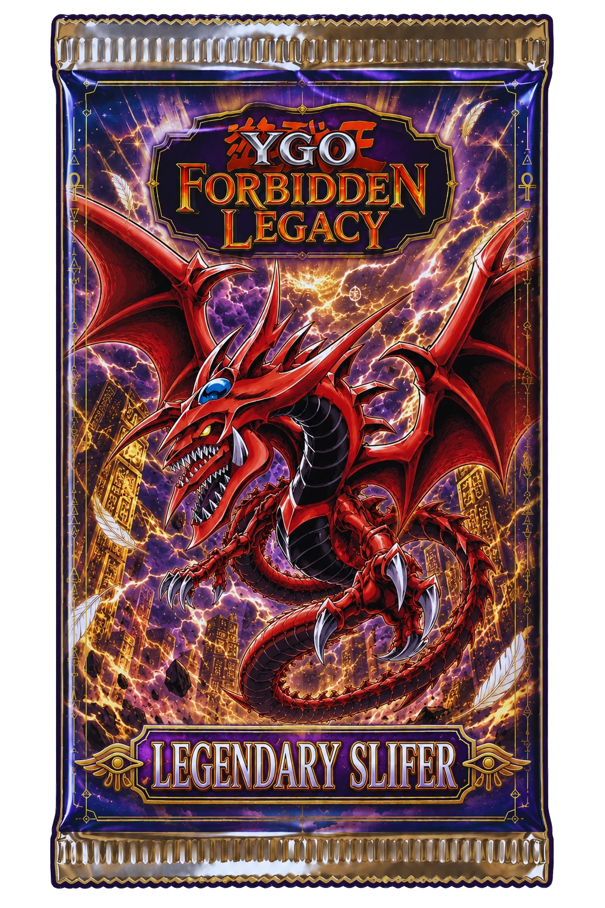
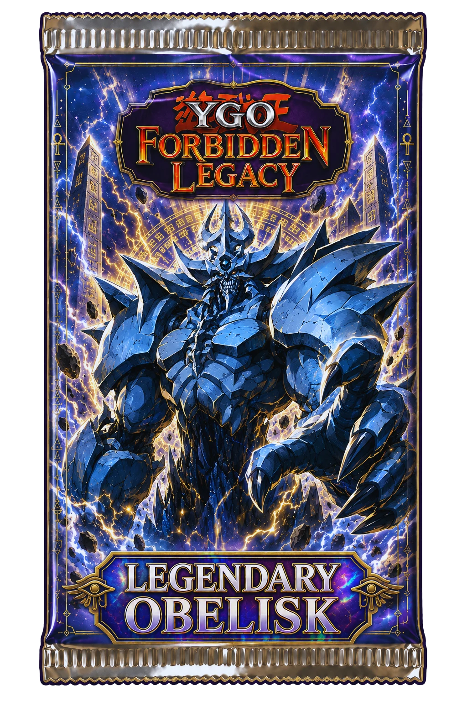
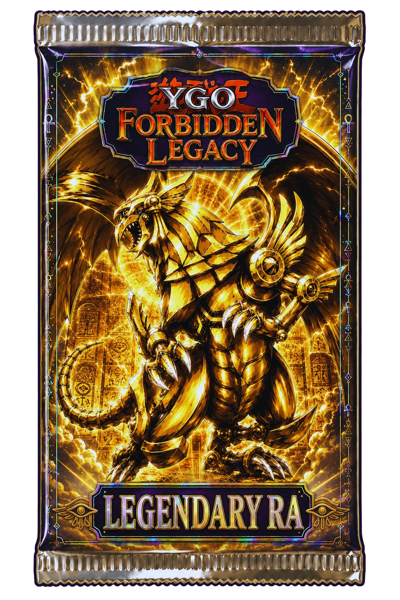
Free Duel, PVP e conquistasFree Duel, PVP and achievementsFree Duel, PVP y logrosFree Duel, PVP và thành tựu
A história acabou, o jogo não. Todo duelista que você vence na campanha fica disponível no Free Duel, com Tier próprio e drop melhor a cada vitória. No PVP você enfrenta outros jogadores, e as conquistas guardam tudo o que você já fez.The story ends, the game doesn't. Every duelist you beat in the campaign stays available in Free Duel, with their own Tier and better drops with each win. In PVP you face other players, and achievements keep track of everything you've done.La historia termina, el juego no. Cada duelista que vences en la campaña queda disponible en el Free Duel, con Tier propio y mejor botín en cada victoria. En el PVP te enfrentas a otros jugadores, y los logros guardan todo lo que ya hiciste.Câu chuyện kết thúc, trò chơi thì không. Mọi đấu sĩ bạn hạ trong chiến dịch đều có trong Free Duel, với Tier riêng và phần thưởng tốt hơn sau mỗi chiến thắng. Trong PVP bạn đấu với người chơi khác, và thành tựu ghi lại mọi điều bạn đã làm.
- Auto Duel: deixe a IA jogar por você e assistaAuto Duel: let the AI play for you and watchAuto Duel: deja que la IA juegue por ti y miraAuto Duel: để AI chơi thay và xem
- PVP com busca, sala por código, espectadores e HardcorePVP with matchmaking, code rooms, spectators and HardcorePVP con búsqueda, sala por código, espectadores y HardcorePVP có ghép trận, phòng theo mã, khán giả và Hardcore
- Ranking ao vivo de PVP e de torneiosLive PVP and tournament leaderboardRanking en vivo de PVP y torneosBảng xếp hạng PVP và giải đấu trực tiếp
Onde e como jogarWhere and how to playDónde y cómo jugarChơi ở đâu và thế nào
A versão Free é gratuita para sempre e vai até o Thief Bakura. A Founder libera a campanha inteira, o Championship, o PVP, o cross-save e até 3 aparelhos na mesma licença.The Free version is free forever and goes up to Thief Bakura. Founder unlocks the whole campaign, the Championship, PVP, cross-save and up to 3 devices on one license.La versión Free es gratis para siempre y llega hasta Thief Bakura. Founder desbloquea toda la campaña, el Championship, el PVP, el cross-save y hasta 3 dispositivos con la misma licencia.Bản Free miễn phí mãi mãi và đến Thief Bakura. Founder mở toàn bộ chiến dịch, Championship, PVP, đồng bộ save và tối đa 3 thiết bị cho một giấy phép.
Pronto para o primeiro duelo?
Ready for your first duel?
¿Listo para el primer duelo?
Sẵn sàng cho trận đầu tiên?
Baixe a versão Free e jogue até o Thief Bakura. Gostou? A Founder libera o resto.
Grab the Free version and play up to Thief Bakura. Liked it? Founder unlocks the rest.
Baja la versión Free y juega hasta Thief Bakura. ¿Te gustó? Founder desbloquea el resto.
Tải bản Free và chơi đến Thief Bakura. Thích không? Founder mở khóa phần còn lại.